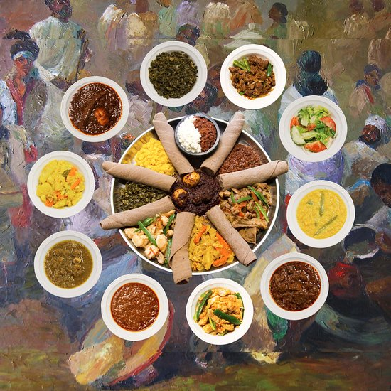

The museum houses Ethiopia's artistic treasures. It contains many precious local archaeological finds such as the fossilized remains of early hominids, the most famous of which is "Lucy," the partial skeleton of a specimen of Australopithecus afarensis. Recently added to the basement gallery is a display on Selam, found between 2000 and 2004. This archaic fossil is estimated to date to 3.3 million years ago.
Entoto Natural Park is the unique place to discover the vastest primaeval mountain area with streams flowing out from clear springs and waterfall where it amazes with absolutely stunningly dramatic places for relaxation or completely hilarious water activities in diverse meandering streams which continues to naturally create hidden rock vault.

Ethiopian and Eritran cuisine is a feast for the eyes as much as the palate. It typically arrives on a platter covered in warm flatbread and piled high with dishes like rich stewed meats and legumes flavored with aromatic Ethiopian spices
Your guide
I have lived in Addis Ababa for over 15 years. so i can show you all of its best part and hidden secrets